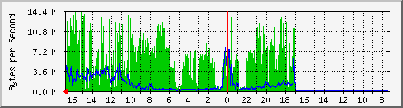
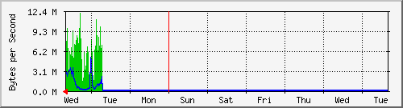
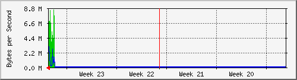
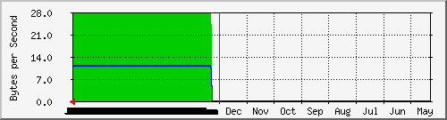

ENLACE PERISUR
| System: | Proxmox-10.1.250.* |
| Maintainer: | ARAFA |
| Description: | GigabitEthernet7/32 |
| ifType: | ethernetCsmacd (6) |
| ifName: | Gi7/32 |
| Max Speed: | 125.0 MBytes/s |
| Ip: | No Ip (No DNS name) |
Estadísticas actualizadas el Miércoles 16 de Junio de 2021 a las 16:45,
'SW-12.126-DRL.Rack01.finanzas.df.gob.mx' ha estado funcionando durante 93 days, 1:01:09.
Gráfico diario (5 minutos : Promedio)

|
Máx |
Promedio |
Actual |
| Entrante: |
14.3 MB/s (11.4%) |
4672.8 kB/s (3.7%) |
6623.6 kB/s (5.3%) |
| Saliente: |
7912.6 kB/s (6.3%) |
982.3 kB/s (0.8%) |
3180.2 kB/s (2.5%) |
Gráfico semanal (30 minutos : Promedio)

|
Máx |
Promedio |
Actual |
| Entrante: |
12.1 MB/s (9.6%) |
743.7 kB/s (0.6%) |
10.5 MB/s (8.4%) |
| Saliente: |
5093.5 kB/s (4.1%) |
152.1 kB/s (0.1%) |
2325.1 kB/s (1.9%) |
Gráfico mensual (2 horas : Promedio)

|
Máx |
Promedio |
Actual |
| Entrante: |
8569.7 kB/s (6.9%) |
174.6 kB/s (0.1%) |
6416.3 kB/s (5.1%) |
| Saliente: |
3060.8 kB/s (2.4%) |
34.9 kB/s (0.0%) |
2849.9 kB/s (2.3%) |
Gráfico anual (1 día : Promedio)

|
Máx |
Promedio |
Actual |
| Entrante: |
28.0 B/s (0.0%) |
28.0 B/s (0.0%) |
28.0 B/s (0.0%) |
| Saliente: |
11.0 B/s (0.0%) |
11.0 B/s (0.0%) |
11.0 B/s (0.0%) |
| VERDE ### |
Entrante:coming Traffic in Bytes per Second |
| AZUL ### |
Tráfico saliente en Bytes por segundo |